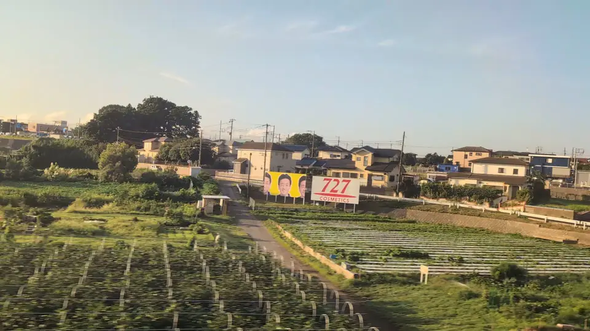
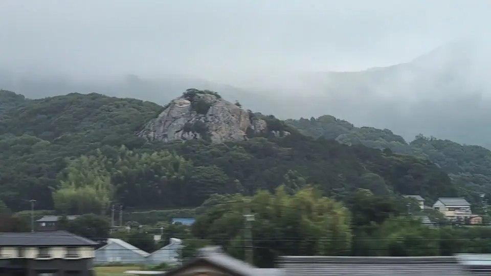

01 / SHINKANSEN
東海道新幹線の「あれ、何？」
看板、塔、岩、削れた山。東京からの時間順です。席の側と通過の目安つき。

線路沿いに何度も出る「727」、何？
答え727 COSMETICSと、きぬた歯科の248看板
大阪の化粧品メーカーの広告で、沿線のあちこちに現れます。藤沢市付近では、すぐ隣に黄色い「248」も。こちらは西八王子の歯科医院の看板です。

斜面いっぱいの三角屋根、あの街は何？
答え平塚市の日向岡
相模川を渡ってすぐ、丘の斜面に赤・青・緑の三角屋根が並ぶ住宅団地です。統一された家並みが等高線に沿って続き、一瞬で目に焼きつきます。

小田原を過ぎて、山際に白い像。あれは何？
答え東善院の魚籃観音像
早川漁港のそばに立つ、高さ約10mの観音像です。手にした魚籠は漁を守る印。海上安全と大漁を願って1982年に建てられました。

空へ駆け上がる線路。あれは何？
答え三島車両所の着発線（通称カタパルト）
ロケットの発射台ではありません。車両基地へ入る列車が向きを変えるための線路です。本線が下っていく一方で高さを保つので、空へ上っていくように見えます。

林の丘から、岩壁だけが突き出している？
答え豊橋市雲谷町の立岩
浜名湖を過ぎて豊橋へ向かう途中に現れる、標高約88mの岩山です。南側が最大約30m切り立った、むき出しのチャートの岩壁です。

岐阜なのに、なぜハワイ語？
答え岐阜羽島のマハロ看板
ホームの向こうの「MaHaLo」は、羽島市に本社を置く会社が販売する海洋深層水の商品名です。海から遠い田園に突然ハワイ語が現れますが、実は販売元のお膝元です。

ナイフで切り落としたような山。なぜあの形？
答え石灰岩を掘り続けた金生山
大垣付近の遠くに見える、全体が石灰岩の山です。江戸時代から採掘が続き、階段状の白い山肌は、もとの形ではなく掘り出した跡です。

米原の近くに、窓の少ない細長い塔？
答えフジテック Big Wingのエレベータ研究塔
高さ170m。エレベータを実物大で試験するための塔です。低い建物の向こうに立つので、米原に近づいた目印になります。
02 / OTHER LINES
ほかの路線の「あれ、何？」
在来線や私鉄の窓にも、気になる景色があります。見かけた人の投稿と、公式の案内を並べました。
🐈️タマちゃんの、世界の車窓から🐈️ 上り東海道本線の電車に乗車中、左車窓に“大船観音”が見えたら『あ～、大船駅に着くなぁ…』と実感するニャッ😻
— @tamachan16sai 元投稿
森から顔だけ出した、白い観音は何？
答え大船観音寺の白衣観音
大船駅に近づくと、山の木々の上に大きな白い顔が現れます。高さ25mの像は、立っているのではなく胸から上だけの姿。1960年に完成しました。
🐈タマちゃんの、世界の車窓から🐈 京浜東北線の南行電車に乗車中、右車窓に“タイヤ公園”が見えたら『あ〜、蒲田に来たなぁ…』と実感するニャッ😻
— @tamachan16sai 元投稿
タイヤでできた怪獣がいる、あの公園は何？
答え大田区の西六郷公園（タイヤ公園）
線路沿いの住宅街に、古タイヤで作られた怪獣やロボットが立つ公園です。タイヤの遊具も多く、「タイヤ公園」の名で親しまれています。
奈良の車窓から。#平城宮跡 #朱雀門 #近鉄
— @fuku_musuko 元投稿
大きな朱色の門。電車が遺跡の中を走っている？
答え世界遺産・平城宮跡の朱雀門と大極殿
奈良行きでは右に朱雀門、左の奥に大極殿。どちらも復元された建物です。1914年に開業した線路が、のちに世界遺産となる宮跡の真ん中を横切っています。
近鉄榊原温泉口駅から見える、今日のルーブル彫刻美術館。
— @Haatainen 元投稿
三重の山あいに、金色の観音とサモトラケのニケ？
答え寶珠山大観音寺と、ルーブル彫刻美術館
近鉄特急の窓から見える金色の像は、高さ33mの純金大観音。そのそばには、ニケやミロのヴィーナスの巨大な像を屋外に置いたルーブル彫刻美術館があります。どちらも榊原温泉口駅から歩ける場所です。
掲載について
東海道新幹線の写真は、すべて新幹線の車窓から撮影したものです。
ほかの路線は、画像を転載せず、投稿者の元の投稿を公式の埋め込みで表示しています。再生すると、Xから読み込みます。席の側や通過時刻は案内していません。